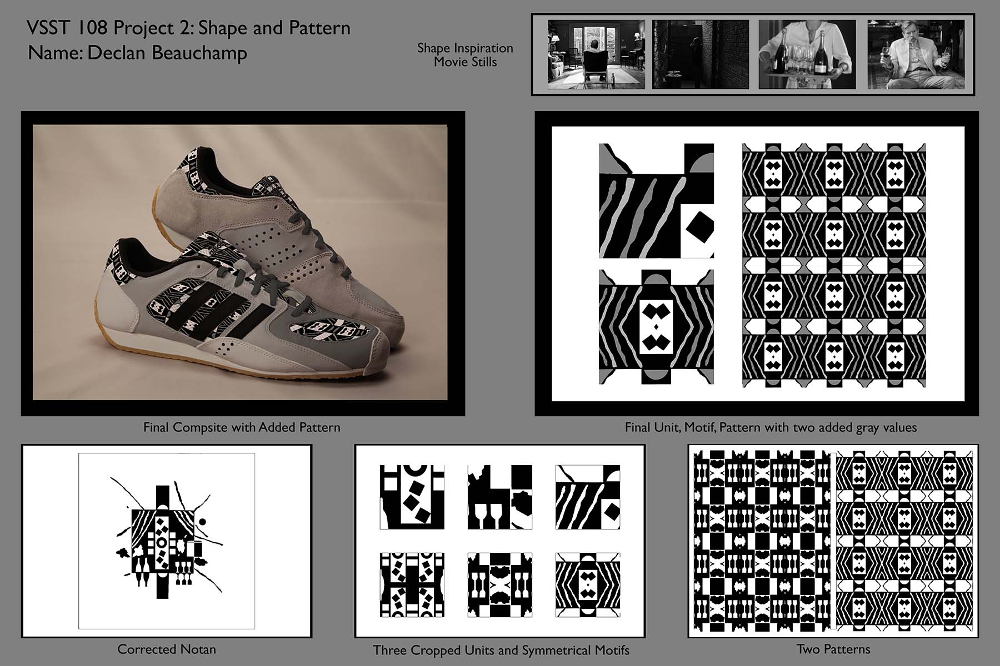

Design I Project 2
For this assignment, we had to create a paper notan out of images from our assinged movie, mine being Sally Potter's The Party. After that, we had to create a cropped pattern, and add grayscale values. After we did that, we had to create a product image using the pattern we created. I chose a pair of fencing shoes, because the sport has been a big part of my life, and I thought it would look cool.